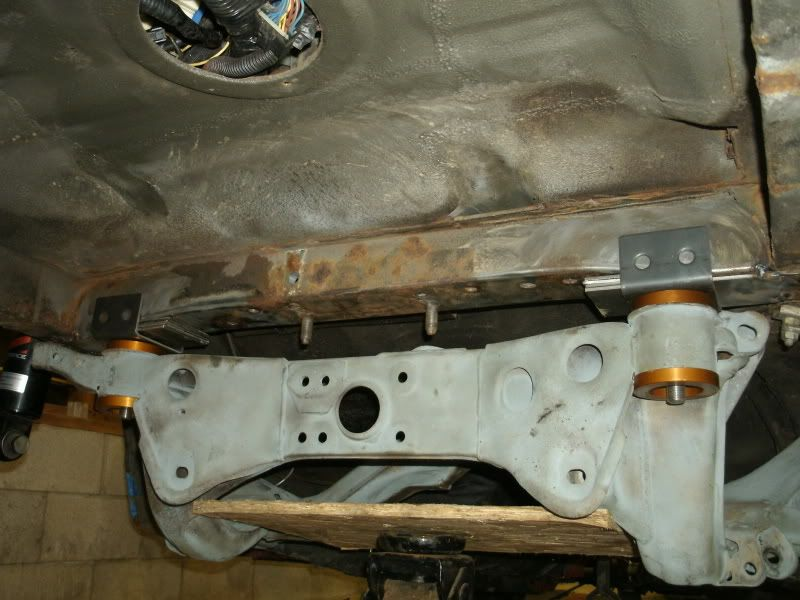
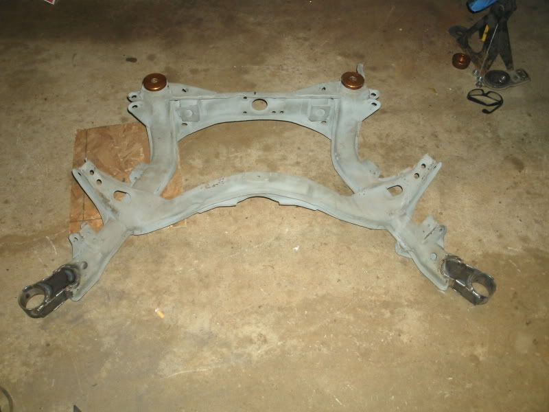

-
Re: S13/S14/S15 Subframe Conversion Kit GROUP BUY-Lathe Candy
Damn it if I would have known earlier I would not have dropped all this money on SPL goodies and just bought stuff from Touge Factory!1uz Swapped, lowered, flaked out '86 z31
'72 Datsun 510 4dr, ka24de-T, slammed resto mod
'84 z31 turbo, coils, wheels a.k.a the gfs weekend car
'86 na2t parts for now a.k.a eventually will get running with a/c daily
'83 280zx project backburner a.k.a ls turbo drag car one day
Custom vg30et tube chassis drift exocet project -
Re: S13/S14/S15 Subframe Conversion Kit GROUP BUY-Lathe Candy
Im so hoping my next check is free for me to use so that I can get in on this. -
Re: S13/S14/S15 Subframe Conversion Kit GROUP BUY-Lathe Candy
GTFO!!!!!!! i just got a new computer, so i just got new interwebz again!!!! coincidentally i just pulled apart my s13 that had FULL suspension and got rid of the shell 8) im fuckin stoked!!!!! -
Re: S13/S14/S15 Subframe Conversion Kit GB-Pictures and WHY! pg6
WHY is no-one buying the STANCE bushings? This is one of few companies interested in supporting us at all? GET ON YOUR HORSE
Production wraps up tomorrow, and I have mandated supplier to provide me costing tomorrow. Kits are ready to ship by the time your reading this, get your payments ready.
Here are some progress pics of my install. I'm no pro but you get the idea.




"produce first.talk second." -
Re: S13/S14/S15 Subframe Conversion Kit GB-Pictures and WHY! pg6
soooo… it's no longer a location plate from stud to stud now, using the factory diff mount studs as a point of reference? -
Re: S13/S14/S15 Subframe Conversion Kit GB-Pictures and WHY! pg6
Looks like it is to me, he just cut the rest of the plate up to fill the gap between the stud plate and the support once it was aligned and tacked.Careless wrote: soooo… it's no longer a location plate from stud to stud now, using the factory diff mount studs as a point of reference?1985 NA2T(now RB) * 1988 SS x2 * 1984 AE x3 * 2006 350Z

-
Re: S13/S14/S15 Subframe Conversion Kit GB-Pictures and WHY! pg6
ahh good eye. that's all we would really need it for.
ideally it would be nice to have it formed to the curvature of the welding area… but not at the projected price.
looks good. gotta get stance and sub frame links now. -
Re: S13/S14/S15 Subframe Conversion Kit GB-Pictures and WHY! pg6
Exactly. Very difficult to form it to the complex curvature and get it welded perfectly straight.
The bar is just a template for welding. Also, given the precision of the kit and the variance in chassis/subframe, no parts come pre-welded as initially considered."produce first.talk second." -
Re: S13/S14/S15 Subframe Conversion Kit GB-Pictures and WHY! pg6
This is getting exciting I can't wait for it to ship
for those that have not purchased the stance bushing yet just remember were cutting out the front one and have to purchase bushing regardless1984 300ZX - 1988 VG30T Engine, Trans, Diff, ECU
1987 300ZX TURBO - ( Parts Car ), 1988 300ZX TURBO - ( Parts Car )
1972 240Z -- Full restore - L28ET L6 Engine from 280zx, T-5 transmission, Rear diff from the 87
1998 Mazda B-2500, And a lot of bikes -
Re: S13/S14/S15 Subframe Conversion Kit GB-Pictures and WHY! pg6
It's because these were purchased with the intent to sit on a shelf forever, never to be installed.sigpic -
Re: S13/S14/S15 Subframe Conversion Kit GB-Pictures and WHY! pg6
I'm working on it butter. I am currently helping 4 of my buddy's with there z31 they are not far enough along for this kit but after they drive mine I know they are going to be drooling for it1984 300ZX - 1988 VG30T Engine, Trans, Diff, ECU
1987 300ZX TURBO - ( Parts Car ), 1988 300ZX TURBO - ( Parts Car )
1972 240Z -- Full restore - L28ET L6 Engine from 280zx, T-5 transmission, Rear diff from the 87
1998 Mazda B-2500, And a lot of bikes -
Re: S13/S14/S15 Subframe Conversion Kit GB-Pictures and WHY! pg6
mike, please let know dave i'm in for a set of bushings for the JDM s14 subframe I have (not sure if it's different, but I Think I need the offset ones?
I have money set aside in paypal for the kit + bushings. -
Re: S13/S14/S15 Subframe Conversion Kit GB-Pictures and WHY! pg6
Same here. We we we so excited!Careless wrote: I have money set aside in paypal for the kit + bushings.
1985 Nissan 300ZX 2+2- My first Z, back in the family
1987 Nissan 300ZX Turbo RIP 4/87 - 4/28/2011
Under Construction: 1986 Nissan 300ZX NA2T Slicktop
Originally posted by Tempestas -
Re: S13/S14/S15 Subframe Conversion Kit GB-Pictures and WHY! pg6
have an interview with boeing on the 18th.......................hopefully I can fund my swap!sigpic
NWN Moderator
FertilePower on XboxLive -
Re: S13/S14/S15 Subframe Conversion Kit GB-Pictures and WHY! pg6
wait, the studs won't be welded to the cross member?

Copyright © 2006–. All rights reserved. Privacy Policy